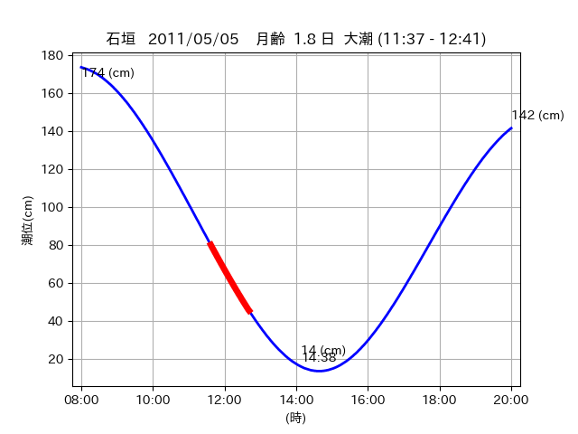
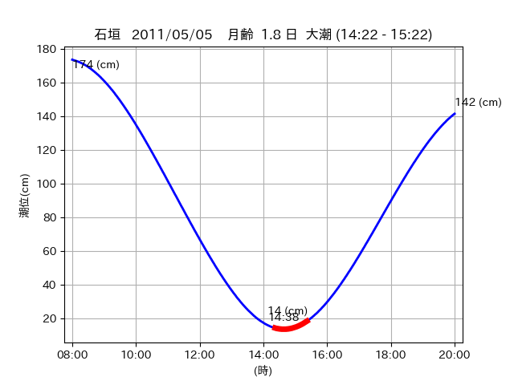

<!DOCTYPE html>
<html>
<head>
    
    <meta http-equiv="content-type" content="text/html; charset=UTF-8" />
    
        <script>
            L_NO_TOUCH = false;
            L_DISABLE_3D = false;
        </script>
    
    <style>html, body {width: 100%;height: 100%;margin: 0;padding: 0;}</style>
    <style>#map {position:absolute;top:0;bottom:0;right:0;left:0;}</style>
    <script src="https://cdn.jsdelivr.net/npm/leaflet@1.9.3/dist/leaflet.js"></script>
    <script src="https://code.jquery.com/jquery-3.7.1.min.js"></script>
    <script src="https://cdn.jsdelivr.net/npm/bootstrap@5.2.2/dist/js/bootstrap.bundle.min.js"></script>
    <script src="https://cdnjs.cloudflare.com/ajax/libs/Leaflet.awesome-markers/2.0.2/leaflet.awesome-markers.js"></script>
    <link rel="stylesheet" href="https://cdn.jsdelivr.net/npm/leaflet@1.9.3/dist/leaflet.css"/>
    <link rel="stylesheet" href="https://cdn.jsdelivr.net/npm/bootstrap@5.2.2/dist/css/bootstrap.min.css"/>
    <link rel="stylesheet" href="https://netdna.bootstrapcdn.com/bootstrap/3.0.0/css/bootstrap-glyphicons.css"/>
    <link rel="stylesheet" href="https://cdn.jsdelivr.net/npm/@fortawesome/fontawesome-free@6.2.0/css/all.min.css"/>
    <link rel="stylesheet" href="https://cdnjs.cloudflare.com/ajax/libs/Leaflet.awesome-markers/2.0.2/leaflet.awesome-markers.css"/>
    <link rel="stylesheet" href="https://cdn.jsdelivr.net/gh/python-visualization/folium/folium/templates/leaflet.awesome.rotate.min.css"/>
    
            <meta name="viewport" content="width=device-width,
                initial-scale=1.0, maximum-scale=1.0, user-scalable=no" />
            <style>
                #map_de9f4bad87d3fde5d94052048a801a89 {
                    position: relative;
                    width: 2048.0px;
                    height: 1600.0px;
                    left: 0.0%;
                    top: 0.0%;
                }
                .leaflet-container { font-size: 1rem; }
            </style>
        
</head>
<body>
    
    
            <div class="folium-map" id="map_de9f4bad87d3fde5d94052048a801a89" ></div>
        
</body>
<script>
    
    
            var map_de9f4bad87d3fde5d94052048a801a89 = L.map(
                "map_de9f4bad87d3fde5d94052048a801a89",
                {
                    center: [24.371, 124.261],
                    crs: L.CRS.EPSG3857,
                    ...{
  "zoom": 12,
  "zoomControl": true,
  "preferCanvas": false,
}

                }
            );

            

        
    
            var tile_layer_50eb67d5f5d3ea1d853dc876617b06c4 = L.tileLayer(
                "https://cyberjapandata.gsi.go.jp/xyz/seamlessphoto/{z}/{x}/{y}.jpg",
                {
  "minZoom": 0,
  "maxZoom": 18,
  "maxNativeZoom": 18,
  "noWrap": false,
  "attribution": "\u5730\u7406\u9662\u5730\u56f3",
  "subdomains": "abc",
  "detectRetina": false,
  "tms": false,
  "opacity": 1,
}

            );
        
    
            tile_layer_50eb67d5f5d3ea1d853dc876617b06c4.addTo(map_de9f4bad87d3fde5d94052048a801a89);
        
    
            var marker_fa4699512a71eb3c9fc660ad5ad8604a = L.marker(
                [24.3871, 124.2602],
                {
}
            ).addTo(map_de9f4bad87d3fde5d94052048a801a89);
        
    
            var icon_f758258d5ceef6c649d94cd073445708 = L.AwesomeMarkers.icon(
                {
  "markerColor": "orange",
  "iconColor": "white",
  "icon": "info-sign",
  "prefix": "glyphicon",
  "extraClasses": "fa-rotate-0",
}
            );
        
    
        var popup_256caa887c3cb9742dc4585d37c87eb4 = L.popup({
  "maxWidth": "100%",
});

        
            
                var html_1ebc3b06b60cf3a2e9a5bcf3703a1678 = $(`<div id="html_1ebc3b06b60cf3a2e9a5bcf3703a1678" style="width: 100.0%; height: 100.0%;"><table><tr><td></td></tr><tr><td><center>20110505 No.1 </center></table></td></tr></table</div>`)[0];
                popup_256caa887c3cb9742dc4585d37c87eb4.setContent(html_1ebc3b06b60cf3a2e9a5bcf3703a1678);
            
        

        marker_fa4699512a71eb3c9fc660ad5ad8604a.bindPopup(popup_256caa887c3cb9742dc4585d37c87eb4)
        ;

        
    
    
                marker_fa4699512a71eb3c9fc660ad5ad8604a.setIcon(icon_f758258d5ceef6c649d94cd073445708);
            
    
            var poly_line_a14563030ea5979fe439120c504a1af4 = L.polyline(
                [[24.3871, 124.2602], [24.3918, 124.2625]],
                {"bubblingMouseEvents": true, "color": "#FF00FF", "dashArray": null, "dashOffset": null, "fill": false, "fillColor": "#FF00FF", "fillOpacity": 0.2, "fillRule": "evenodd", "lineCap": "round", "lineJoin": "round", "noClip": false, "opacity": 1.0, "smoothFactor": 1.0, "stroke": true, "weight": 3}
            ).addTo(map_de9f4bad87d3fde5d94052048a801a89);
        
    
            var marker_47de05a54f9d4827a2dec6b7d6160c0c = L.marker(
                [24.4152, 124.2673],
                {
}
            ).addTo(map_de9f4bad87d3fde5d94052048a801a89);
        
    
            var icon_16f5deeba75f85a6b6ae954e0a254c86 = L.AwesomeMarkers.icon(
                {
  "markerColor": "orange",
  "iconColor": "white",
  "icon": "info-sign",
  "prefix": "glyphicon",
  "extraClasses": "fa-rotate-0",
}
            );
        
    
        var popup_bb56efda609a09bff3db221eb3b0d8c4 = L.popup({
  "maxWidth": "100%",
});

        
            
                var html_576dae702b359a51887d87b630a7ee0c = $(`<div id="html_576dae702b359a51887d87b630a7ee0c" style="width: 100.0%; height: 100.0%;"><table><tr><td></td></tr><tr><td><center>20110505 No.2 </center></table></td></tr></table</div>`)[0];
                popup_bb56efda609a09bff3db221eb3b0d8c4.setContent(html_576dae702b359a51887d87b630a7ee0c);
            
        

        marker_47de05a54f9d4827a2dec6b7d6160c0c.bindPopup(popup_bb56efda609a09bff3db221eb3b0d8c4)
        ;

        
    
    
                marker_47de05a54f9d4827a2dec6b7d6160c0c.setIcon(icon_16f5deeba75f85a6b6ae954e0a254c86);
            
    
            var poly_line_9f3b82a3cbd3373dfcbd45e34d5cd098 = L.polyline(
                [[24.4152, 124.2673], [24.4083, 124.2687]],
                {"bubblingMouseEvents": true, "color": "#00FFFF", "dashArray": null, "dashOffset": null, "fill": false, "fillColor": "#00FFFF", "fillOpacity": 0.2, "fillRule": "evenodd", "lineCap": "round", "lineJoin": "round", "noClip": false, "opacity": 1.0, "smoothFactor": 1.0, "stroke": true, "weight": 3}
            ).addTo(map_de9f4bad87d3fde5d94052048a801a89);
        
    
            var marker_6550875f62a509bf3382f78ccd0bc286 = L.marker(
                [24.3768, 124.261],
                {
}
            ).addTo(map_de9f4bad87d3fde5d94052048a801a89);
        
    
            var icon_d22f18a44456fff5c06af3681c719a2f = L.AwesomeMarkers.icon(
                {
  "markerColor": "orange",
  "iconColor": "white",
  "icon": "info-sign",
  "prefix": "glyphicon",
  "extraClasses": "fa-rotate-0",
}
            );
        
    
        var popup_be76a7ab60b12c0c72ffb57b0e240249 = L.popup({
  "maxWidth": "100%",
});

        
            
                var html_451b66f46a35c984ae6a5a15f9d8a42e = $(`<div id="html_451b66f46a35c984ae6a5a15f9d8a42e" style="width: 100.0%; height: 100.0%;"><table><tr><td></td></tr><tr><td><center>20110505 No.3 </center></table></td></tr></table</div>`)[0];
                popup_be76a7ab60b12c0c72ffb57b0e240249.setContent(html_451b66f46a35c984ae6a5a15f9d8a42e);
            
        

        marker_6550875f62a509bf3382f78ccd0bc286.bindPopup(popup_be76a7ab60b12c0c72ffb57b0e240249)
        ;

        
    
    
                marker_6550875f62a509bf3382f78ccd0bc286.setIcon(icon_d22f18a44456fff5c06af3681c719a2f);
            
    
            var poly_line_5181054cc4dcf885fd8d7f1e08bf53c6 = L.polyline(
                [[24.3768, 124.261], [24.3648, 124.2604]],
                {"bubblingMouseEvents": true, "color": "#00FFFF", "dashArray": null, "dashOffset": null, "fill": false, "fillColor": "#00FFFF", "fillOpacity": 0.2, "fillRule": "evenodd", "lineCap": "round", "lineJoin": "round", "noClip": false, "opacity": 1.0, "smoothFactor": 1.0, "stroke": true, "weight": 3}
            ).addTo(map_de9f4bad87d3fde5d94052048a801a89);
        
</script>
</html>